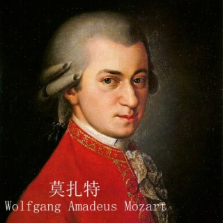

贝多芬出生于音乐世家，4 岁会弹奏羽管键琴，8 岁登台演出，获“音乐神童”美誉。 他曾拜师普鲁士著名音乐教育家聂费，12 岁开始“音乐仆役”生涯。 17 岁拜访莫扎特获称赞，19 岁创作表达对自由民主渴望的合唱曲。 30 岁失恋，此后耳朵发聋，但他立志从事音乐创作，创作出诸多经典作品，如 《英雄交响曲》
Beethoven was born into a musical family. He could play the harpsichord at the age of 4 and performed on stage at the age of 8, earning him the reputation of a "musical prodigy". He studied under the famous Prussian music educator Nie Fei and began his career as a "music servant" at the age of 12. At the age of 17, he was praised for his visit to Mozart, and at the age of 19, he composed a choral piece expressing his desire for freedom and democracy. He fell out of love at the age of 30 and became deaf after that. However, he determined to engage in music creation and created many classic works, such as "Eroica Symphony"
1756年1月27日，沃尔夫冈·阿玛多伊斯·莫扎特生于奥地利的萨尔茨堡一位宫廷乐师的家庭，原籍是德国，他的父亲列奥波尔得·莫扎特是那座城中宫廷天主教乐团的小提琴手，也是一位作曲家;母亲安娜·玛丽亚·莫札特也热衷于音乐并会拉大提琴和小提琴。莫扎特是家中最小的孩子排行第七。
莫扎特善于把艺术中美好的东西和渗透生活的深刻性结合起来，再把强大的力量、直率的气质和刚毅的意志以及现实意义的感觉结合 。其作品具有古典乐派的严谨，对称的特点以外，还具有其自身的特点。在他的艺术歌曲中，令人称道的是诗与音乐完美的结合，贯穿了他的创作时期的始终，因此也体现出不同时期的艺术特征和创作特点 。他的音乐作品主题完整，有着鲜明的轮廓，细小的结构单位之间也有精致的、动机的联系。
莫扎特留给世人的作品达600多首，因没有标明创作时间，因此次序混乱。主要作品是63首交响曲，16首嬉游曲，13首小夜曲，15首进行曲，105首小步舞曲，172首舞曲，27首钢琴协奏曲，5首小提琴协奏曲，23首弦乐四重奏，4首管乐弦乐重奏曲，9首钢琴重奏曲，43首小提琴奏鸣曲，23首钢琴奏鸣曲，15部歌剧，4部清唱剧，4首康塔塔，50首宗教合唱曲，18首重唱歌曲，55首独唱和管弦乐队曲，32首歌曲。莫扎特逝世多年，其作品仍在各国舞台和音乐会上占居一席重要位置的世界性作曲家，他丰硕无比的创作遗产大大地丰富了世界音乐文化宝库。
Wolfgang Amadeus Mozart was born on January 27, 1756, in a family of court musicians in Salzburg, Austria. His father, Leopold Mozart, was a violinist in the court Catholic orchestra of that city and also a composer. His mother, Anna Maria Mozart, was also keen on music and could play cello and violin. Mozart was the seventh child in the family.
Mozart was good at combining the beautiful things in art with the profoundness that permeates life, and then combining powerful strength, straightforward temperament, strong will and sense of realistic significance. His works have the rigorous and symmetrical characteristics of classical music, as well as their own characteristics. In his art songs, what is commendable is the perfect combination of poetry and music, which runs through his creative period, and thus also reflects the artistic characteristics and creative characteristics of different periods. His musical works have complete themes, with clear outlines, and there are also delicate and motivational connections between small structural units.
Mozart left more than 600 works to the world, but the order is chaotic because the creation time is not marked. The main works are 63 symphonies, 16 divertimentos, 13 serenades, 15 marches, 105 minuets, 172 dances, 27 piano concertos, 5 violin concertos, 23 string quartets, 4 wind and string chamber music, 9 piano chamber music, 43 violin sonatas, 23 piano sonatas, 15 operas, 4 oratorios, 4 cantatas, 50 religious choral works, 18 duets, 55 solo and orchestral works, and 32 songs.
Although Mozart has passed away for many years, his works still occupy an important place on the stages and concerts of various countries. He is a world-class composer. His extremely fruitful creative legacy has greatly enriched the treasure house of world music and culture.
Mozart's life lasted only 35 years, but his works are still played today because of their universal value, rich connotations and intriguing meanings. The immortal music composed by Mozart with his soul and life has made outstanding contributions to the development of world culture.